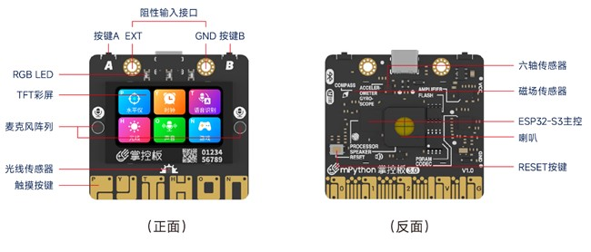

1.1. 掌控板3.0 简介
{kind=link}

掌控板 3.0 是一款教学用开源硬件，具有丰富的应用场景，满足AIOT物联网教学需求。
板载ESP32-S3双核芯片，支持WiFi和蓝牙双模通信。 板上集成1.47寸高清lcd彩屏、6轴（加速度+陀螺仪）、磁传感器、声音、数字光线传感器、2个物理按键、6个触摸按键、音频编解码芯片+喇叭。除此外，还有一个阻性输入接口，方便接入各种阻性传感器。丰富多样的传感器和小体积的尺寸、结合蓝牙和WiFi双无线通讯，可现实不同的物联网应用场景。
掌控板固件基于MicroPython及乐鑫物联网开发框架（ESP-IDF）二次开发，集成板载及常用外部模块驱动、物联网通信接口、音频录放、语音识别、语音合成、语言大模型应用编程等，结合mpython等上位机编程软件，可以通过编程实现丰富的应用场景。
ESP32-S3是乐鑫推出的高性能具有双核Wi-Fi & 蓝牙5芯片，专为AIoT人工智能物联网场景优化。 增加了用于加速神经网络计算和信号处理等工作的向量指令 (vector instructions)。AI 开发者们通过 ESP-DSP 和 ESP-NN 库使用这些向量指令，可以实现高性能的图像识别、语音唤醒和识别等应用。
MicroPython是以轻量高效,适配微控制器资源、通过mpython模块操作GPIO/I2C、Python 3兼容为核心，专为嵌入式设计的精简语言。支持REPL交互调试、跨平台移植（ESP32/STM32等），提供专用库（网络、文件系统）和异步编程，兼顾低功耗与开发便捷性，适合物联网、教育及工业控制等快速原型开发。
做为一款教学用开源硬件，可以实现以下应用场景：
编程教育
图形化编程入门：支持 Scratch 或 mPython 等图形化编程语言，以拖拽代码块的方式实现程序逻辑，降低编程门槛，让零基础学生轻松上手，理解编程基础概念，如顺序执行、条件判断、循环结构等 。
Python 编程进阶：也支持 Python 文本编程语言，适合有一定基础、想深入学习编程的学生，帮助他们掌握变量、函数、类等更复杂的编程知识 ，并通过实际项目提升编程能力。
传感器应用
环境监测：利用光线传感器感知环境光照强度，实现自动调节屏幕亮度或控制灯光开关 ；搭配温湿度传感器（如外接 DHT11 ），实时监测环境温湿度 ，并可据此设计自动调节设备，如智能加湿器、通风系统等。
运动检测：借助三轴加速度计，检测物体运动状态，如倾斜、震动、摇晃等，用于开发计步器、运动游戏、防盗报警等应用；地磁传感器可检测磁场变化，实现电子罗盘功能。
创意造物
电子宠物：学生可通过编程结合掌控板显示屏、按键、传感器等，制作属于自己的电子宠物，实现喂食、玩耍、成长等功能，培养学生的逻辑思维和责任感 。
小游戏制作：利用掌控板的按键、传感器等，开发各类小游戏，如赛车游戏中通过方向传感器控制赛车移动 ；还能制作打地鼠、贪吃蛇等游戏，提升学生的编程兴趣和动手能力。
物联网应用
智能家居控制：凭借支持 Wi-Fi和蓝牙双模通信的特性，掌控板可作为智能家居系统的控制节点，连接并控制智能家电、灯光、门锁等设备 ，实现远程控制、定时开关、场景联动等功能 ，如通过手机 APP 远程控制家里的灯光开关和亮度调节。
智能环境监测系统：将多个掌控板布置在不同区域，组成环境监测网络，实时采集并上传温湿度、空气质量等数据到云端 ，用户可通过网页或手机端查看数据，实现对环境的智能化管理 。
人工智能相关应用
简单 AI 功能实现：结合外部传感器与编程，实现一些基础的人工智能应用，如利用声音传感器和图像识别模块（外接），开发简单的语音识别控制设备或图像分类系统 。
学习 AI 原理：学生通过在掌控板上实践相关项目，理解人工智能的基本原理和算法应用，为进一步学习人工智能知识奠定基础 。